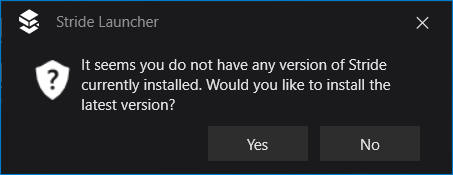
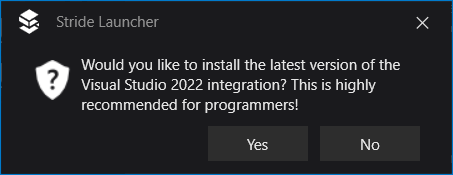

Install Stride
Warning
Приносим свои извинения за неудобства. Для этой страницы нет перевода на русский язык. Она будет отображаться на английском языке.
Beginner
Download the Stride installer (StrideSetup.exe) from the Stride website.
Double-click the StrideSetup.exe file.
The Stride Setup Wizard opens.

Click Next.
The Stride installation type window opens.
Select an installation type and click Next.
The Select installation folder window opens.

Select a folder to install Stride to and click Next.
The Create application shortcuts window opens.

Choose which shortcuts you want Stride to create, and click Next.
The Ready to Install window opens.
Click Install.
Installation begins.

After the installer closes, Stride creates shortcuts in locations you selected and the Stride Launcher starts.
The first time, you will be asked to accept the privacy policy.

Check I agree to the Privacy Policy, and then click I Accept.
The Stride Launcher window opens.

The Stride Launcher prompts you to install the latest version of Stride.

Click Yes.
Installation of the latest version of Stride begins.

While the installation is in progress, the release notes are displayed.
During the installation, you might be asked to install the .NET SDK if it's not already on your machine.

Click Install.
The Stride Launcher asks if you want to install the Visual Studio integration. This lets you edit shaders directly from Visual Studio and provides syntax highlighting, live code analysis with validation, error-checking, and navigation. Installing the integration isn't mandatory, but we recommend it.

Stride is now installed and ready to use.
Note
If you don't install the prerequisites, Stride won't run. In this case, you can download and install the prerequisites separately. For instructions, see Troubleshooting — Stride doesn't run.
Alternatively, uninstall Stride, restart the Stride installer, and install the prerequisites when prompted.